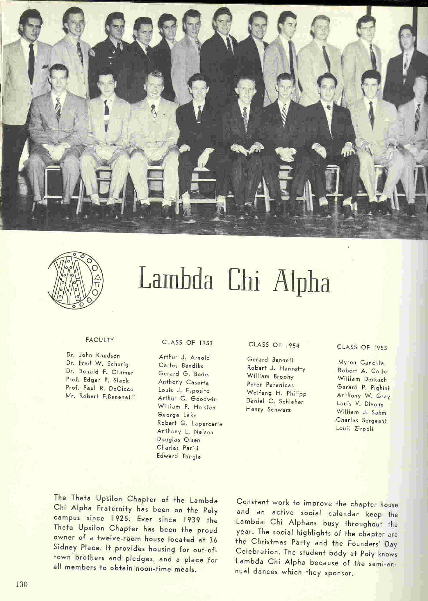

Recovery and Growth
The post-WWII boom to the economy was a good time for the fraternity system and general, and a very good time for Theta-Upsilon Zeta.
During the period 1943-1945, Poly went on a term system, more compressed than its usual semester system, to accomodate the Army Specialized Training Program. Classes met year-round and breaks were short. (For example. the Fall '44 term ended on Saturday, December 23, and classes for a Winter term (between fall and Spring terms) started on January 2, 1945).
Fraternities on campus in 1945 according to the Polytechnic Institute of Brooklyn Bulletin (the course catalog) were:
- Alpha Chi Rho
- Pi Kappa Phi
- Lambda Chi Alpha
- Phi Beta Delta
- Alpha Phi Delta
- Alpha Kappa Pi
- Omega Delta Phi
- Iota Eta Sigma
- Sigma Chi Upsilon
- Alpha Mu Sigma
- Phi Alpha
Active membership numbers were generally high; finances were not really a problem; the chapter was settled comfortably at 36 Sidney Place, and Elles M. Derby kept the house corporation running smoothly. (Well, it was not that smooth from Derby's standpoint; he had to do a lot of clever work to keep the chapter out of financial troubles and out of hot water with the city. But much of the trouble was transparent to the active chapter.)
Below is a picture and blurb from the 1951 Polywog featuring the chapter.

Below is a page from the 1953 Polywog, showing the chapter. 
Notice that the yearbok mentions that we had six Brothers on faculty, including Edgar Slack (who co-authored, with Housman-a brother of Pi Kappa Phi's chapter at Poly-the famous and widely used college text on physics) and Donald Othmer, who left Poly the largest individual gift ever left to a university and after whom Poly's new dormitory is named.
Fraternities on campus in 1953 were:
- Phi Alpha (129 Schermerhorn Street)
- Lambda Chi Alpha (36 Sidney Place)
- Pi Kappa Phi (33 Sidney Place)
- Alpha Phi Delta (121 Schermerhorn Street)
Note: The Poly chapter of Alpha Epsilon Pi, which was active during "The Golden Years," was founded in 1953, apparently after the 1953 yearbook went to press.